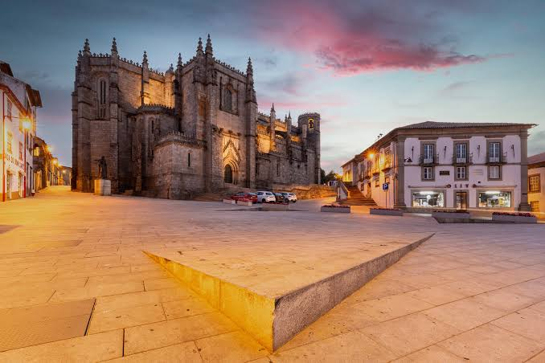

Turismo na cidade de Guarda
História
Cidade fortaleza e bastião da fronteira, a Guarda é a cidade mais alta de Portugal, edificada numa cota média um pouco acima dos mil metros de altitude. Com uma fundação consagrada pelo rei D. Sancho I, que lhe atribui o seu primeiro foral a 27 de Novembro de 1199, a Guarda é herdeira de um património cultural rico e único, de mais de 800 anos de História.
Da Torre de Menagem, símbolo máximo de toda a estrutura defensiva, pode usufruir-se de uma vista sem par sobre a paisagem circundante. A Sé Catedral, verdadeiro ícone da Cidade construída entre os séculos XIV e XVI, tem qualidades construtivas e estéticas que a impõem como um dos monumentos maiores de toda a história da arquitetura portuguesa. Nas ruas do Centro Histórico podem descobrir-se marcas da convivência ancestral entre cristãos e judeus, numa das mais antigas e importantes judiarias da Beira Interior.
Cidade Fortaleza
